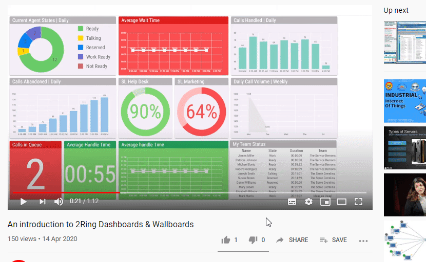
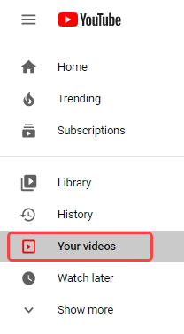
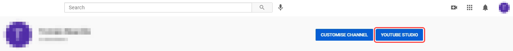
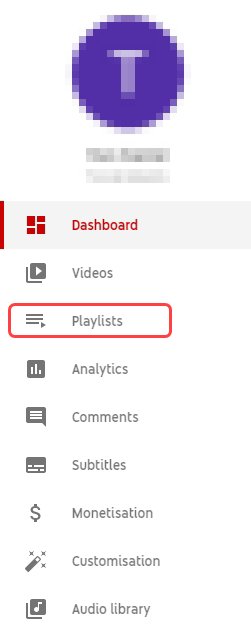
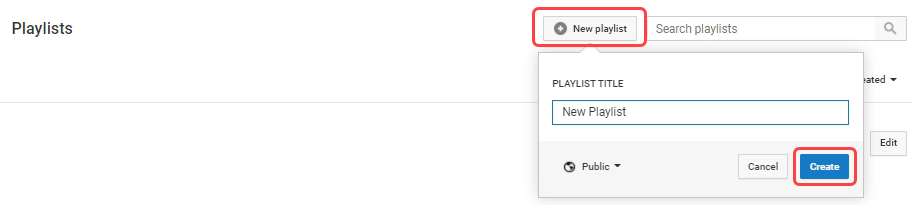
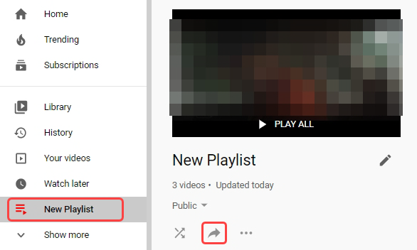
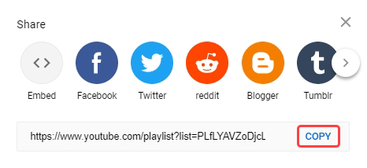

Video – YouTube¶
The Video – YouTube is a Segment type, that embeds a video or a playlist, hosted on the YouTube platform.
For general information about this segment, see Video – YouTube chapter.
The video is always automatically played. In case the autoplay function does not work properly, see the Media autoplay not working chapter.
- URL
Required
URL of the video or playlist.
- Volume
Inheritable
Volume at which the video should be played.
- Force Closed Captions
Whether the closed captions are enabled, when the video supports them.
- Playback Controls
When enabled, all video controls are enabled. Rewinding or changing of the volume is possible. Otherwise the video can only be paused and resumed.
- Annotations
Whether the annotations are enabled.
Getting the URL of a YouTube Video
The URL of a YouTube video can be acquired in one of two ways:
Navigate to the desired video on YouTube and copy the URL form the browser’s address bar
Click the Share button bellow the YouTube video and copy the URL from the text field.
Figure 1: URL copy
All YouTube videos are in one of the following formats:
https://www.youtube.com/watch?v=videoIDhttps://youtu.be/videoID
YouTube Playlists
To play a collection of videos in DW a YouTube playlist can be created.
Create Playlist
Figure 2: Login in to your YouTube account and click on Library on the left menu
Figure 3: Click on YouTube Studio
Figure 4: Click on Playlists on the left menu
Figure 5: Click on New Playlist, name it and click Create
Get Playlist URL
Figure 6: Click on your playlist located in the left menu and then click on share button.
Figure 7: In the Share dialog, click on Copy, to copy your playlist URL to clipboard
Some videos may contain advertisements. For more information on turning them off, refer to the following links:
https://support.google.com/youtube/answer/132596?hl=en&ref_topic=7072227
https://support.google.com/youtube/answer/6332943?hl=en&ref_topic=7071317